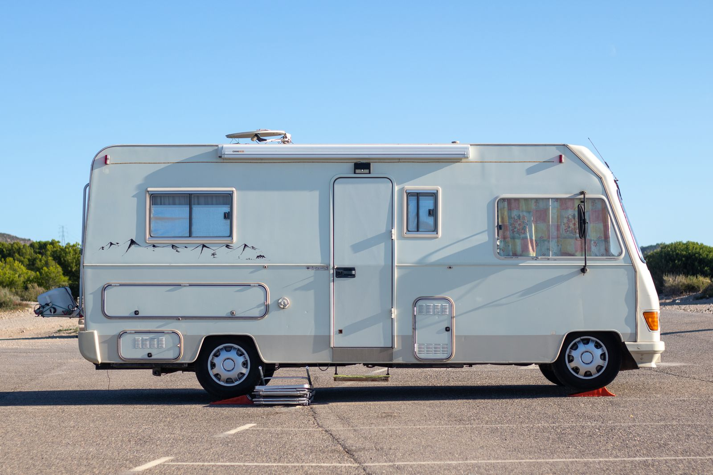
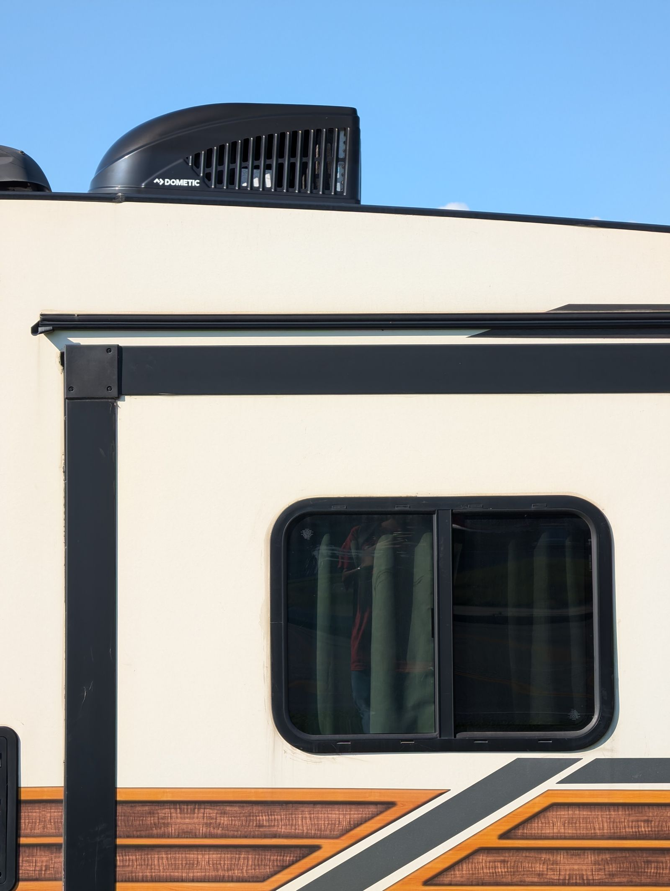

Your RV won't fit
in our shop — good thing we don't have one.
Lane's RV Repair comes to you. Clay has been fixing RVs and campers around College Station for years, and customers keep coming back — some for "over the years," per their own words.

Illustrative stock photo — photo by Jordi Clapera Parés / Pexels.
Clay drives to wherever your RV is parked
Lane's RV Repair is a mobile-only service — there's no storefront to visit because the shop comes to you. The Google listing gives no fixed street address; area below is illustrative of a College Station-centered mobile radius, not a confirmed service boundary.
(base area)
Illustrative route only — call (979) 446-4941 to confirm whether your location is in range.
RV & camper repair, on-site
Real reviews describe leaf-spring replacement, multi-hour installs, and long-term repeat service. Exact services below are general examples for a mobile RV repair business — confirm your specific repair by phone.
Suspension & leaf springs
On-site spring replacement and suspension repair, done at your RV's parking spot.
Appliance & systems repair
RV-specific appliance, plumbing, and electrical troubleshooting — confirm by phone.
Roof & seal maintenance
Leak prevention and seal work — confirm availability by phone.
Pre-trip inspection
A once-over before you hit the road — confirm by phone.
Diagnostics & troubleshooting
Clay walks customers through what's wrong before starting the fix.
General mobile repair
If it's broken on your RV, call and ask — mobile service means Clay comes to you.
Services above are general examples for a mobile RV repair business, informed by real customer reviews — call (979) 446-4941 to confirm exactly what your RV needs.
A mobile mechanic customers trust for years, not one visit

Lane's RV Repair is run by Clay, who drives out to fix RVs and campers wherever they're parked around College Station. Reviewers describe him answering calls promptly, walking customers through the repair before starting, and personally replying to nearly every review — often signing off with a genuine "thank you and God bless."
One repeat customer put it simply: "Over the years I have had the pleasure of using Lane's Mobile RV service and Clay has exceeded my expectations in every way." That's the kind of trust that only builds from doing right by people, repeatedly, over time.
Sourced from Lane's RV Repair's public Google Business Profile, verified 2026-09-21.
Mon–Fri, 8 AM to 5 PM
Hours
Monday–Friday: 8 AM–5 PM
Saturday & Sunday: Closed
Verified on the Google Business listing, 2026-09-21.
Contact
Mobile-only service — no public street address is listed. No independent website found.
What customers say about Clay
Lane's RV Repair holds a 4.7-star rating on Google from 31 reviews — 29 of them five stars. Reviewers repeatedly highlight prompt response, fair pricing, and detailed, honest work.
Individual Google review text will appear here once the site is connected live — this demo doesn't publish scraped review quotes.
Rating verified on Lane's public Google Business Profile, 2026-09-21.
RV trouble? Clay will come to you.
Call Lane's RV Repair: Mobile Service and get a real person who shows up and does the job right.
Mobile service around College Station, TX · Mon–Fri 8 AM–5 PM